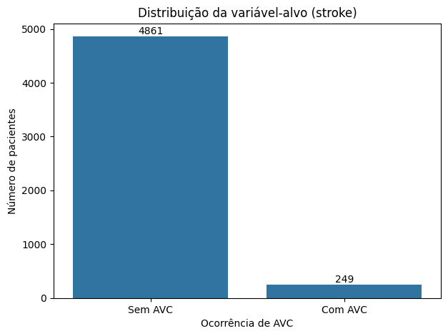
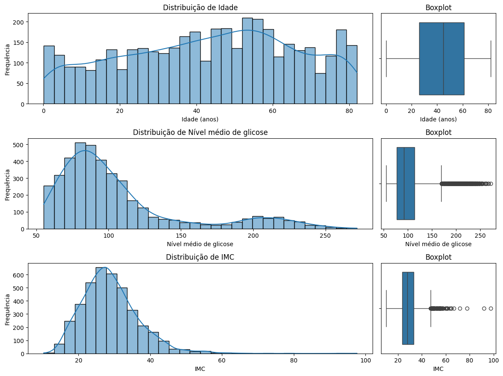
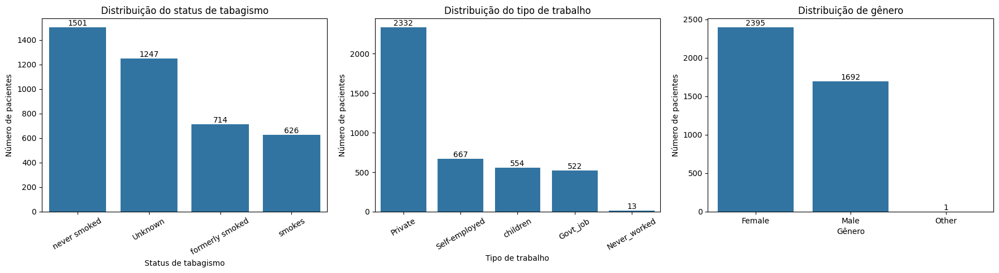
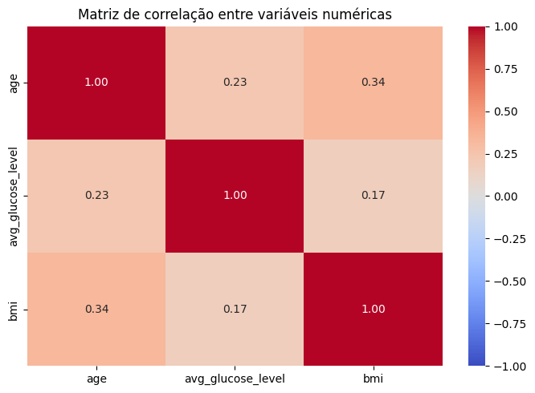
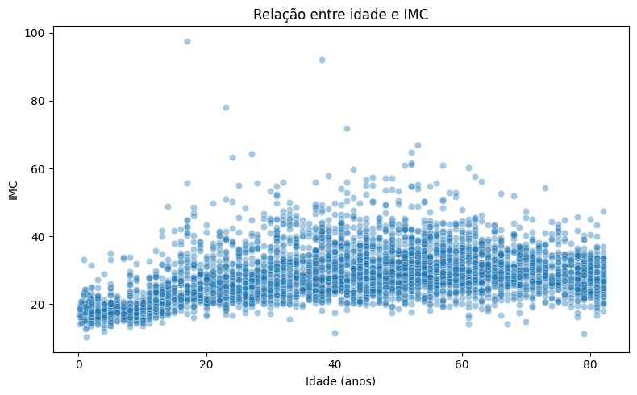
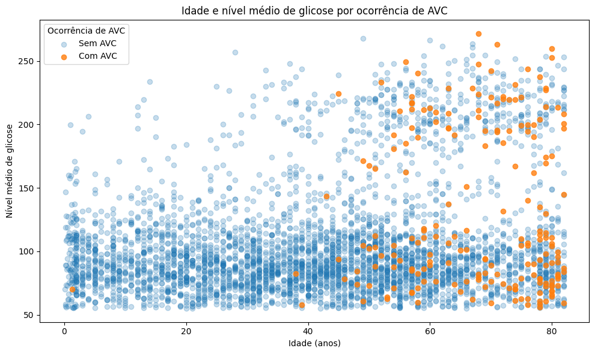
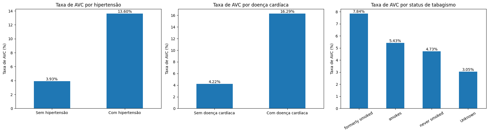
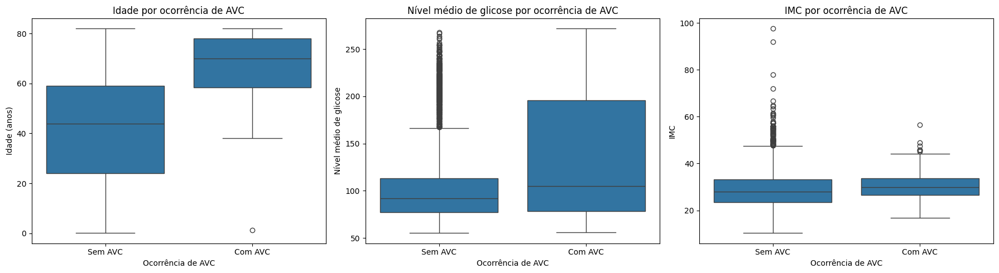
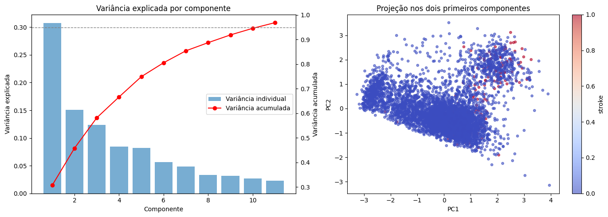

Projeto de Machine Learning
Informações gerais
Docente: Humberto Sandman
Integrantes:
-
Emily Britto -- emilybg@al.insper.edu.br
-
Gabriel Aguiar -- gabrielca5@al.insper.edu.br
Data da entrega: 14/09/2026
Dataset escolhido: Stroke Prediction Dataset
Tipo de problema: Classificação
Objetivo
Esta APS tem como objetivo desenvolver uma EDA (análise exploratória de dados) do Stroke Prediction Dataset a fim de entender a estrutura, qualidade, distribuições, relações entre variáveis (numéricas e categóricas) e desafios, como missing values e vieses, preparando para a modelagem nas fases subsequentes.
Para isso, as manipulações e testes realizados foram feitos em um notebook do Google Colab (cujo link será referenciado ainda nessa seção), e, para melhor explicação das tarefas, produzimos este material complementar (e isso foi 100% por iniciativa própria e com certeza não foi porque era um requisito pra tirar ´+´... rs)
1. Carregamento e inspeção inicial dos dados:
1.1 Sobre o dataset
O dataset utilizado neste projeto foi obtido no Kaggle. Ele contém informações sobre pacientes e é usado para prever se um paciente é mais sucetível a ter um AVC (Acidente Vascular Cerebral) com base em características como gênero, idade, doenças cardíacas pré-existentes, etc.
- Fonte: Kaggle
- Número de linhas: 5110
- Número de features (colunas): 12
- Variável-alvo:
stroke - Tipo de problema: Classificação
1.2 Sobre as features do dataset
| Feature | Tipo | Descrição |
|---|---|---|
id |
Identificador | Identificador único do paciente |
gender |
Categórica nominal | Gênero do paciente (Male, Female ou Other) |
age |
Numérica contínua | Idade do paciente |
hypertension |
Categórica binária | Indica presença de hipertensão: 1 para sim e 0 para não |
heart_disease |
Categórica binária | Indica presença de doença cardíaca: 1 para sim e 0 para não |
ever_married |
Categórica binária | Indica se o paciente já foi casado (Yes ou No) |
work_type |
Categórica nominal | Tipo de ocupação (children, Govt_job, Never_worked, Private ou Self-employed) |
Residence_type |
Categórica binária | Tipo de área de residência (Rural ou Urban) |
avg_glucose_level |
Numérica contínua | Nível médio de glicose no sangue |
bmi |
Numérica contínua | Índice de Massa Corporal (IMC) do paciente |
smoking_status |
Categórica nominal | Situação em relação ao tabagismo (formerly smoked, never smoked, smokes ou Unknown) |
stroke |
Target binário | Indica ocorrência de AVC: 1 para sim e 0 para não |
1.3 Tipos das variáveis
Variáveis numéricas
ageavg_glucose_levelbmi
Ou seja, são 3 variáveis numéricas.
Sobre a variável id
Embora id seja armazenada numericamente no dataset, ela não representa uma grandeza quantitativa, mas apenas um identificador único de cada paciente. Por esse motivo, ela não será considerada uma feature numérica nas análises estatísticas nem utilizada posteriormente como variável preditora.
Variáveis categóricas
genderhypertensionheart_diseaseever_marriedwork_typeResidence_typesmoking_status
Já aqui, são 7 variáveis categóricas.
Sobre a variável stroke
A variável stroke também é categórica binária, porém é tratada separadamente por ser a variável-alvo do problema.
Observações
De início, já percebemos que existem bem mais variáveis categóricas e que elas exigirão diferentes manipulações, que traremos mais à frente.
1.4 Valores ausentes e inconsistências
A inspeção inicial revelou dois tipos diferentes de ausência de informação no dataset: valores ausentes explícitos e valores ausentes representados por uma categoria textual.
Valores ausentes explícitos
A análise utilizando os valores nulos reconhecidos pelo Pandas identificou ausência apenas na variável bmi.
| Feature | Valores ausentes | Percentual |
|---|---|---|
bmi |
201 | 3,93% |
Portanto, aproximadamente 3,93% dos pacientes não possuem informação registrada para o Índice de Massa Corporal.
A estratégia utilizada para tratar esses valores será definida mais a frente, no pré-processamento.
Ausência de informação em smoking_status
Além dos valores NaN, foi identificada uma situação particular na variável smoking_status:
Segundo a documentação do dataset, a categoria Unknown significa que a informação sobre o status de tabagismo não está disponível para aquele paciente.
Foram encontrados:
| Situação | Quantidade | Percentual |
|---|---|---|
smoking_status = "Unknown" |
1.544 | 30,22% |
Assim, apesar de Unknown não ser reconhecido como um valor nulo, ele representa ausência de informação.
~30% dos pacientes tem smoking_status desconhecido. Substituir esses registros pela categoria mais frequente, por exemplo, seria atribuir um comportamento de tabagismo a uma parcela relativamente grande dos pacientes. Assim, nessa etapa optamos por preservar Unknown, em vez de realizar uma imputação.
1.5 Verificação de inconsistências
Registros duplicados
Não foram identificadas linhas completamente duplicadas no dataset. Também foi verificada a coluna id, utilizada como identificador dos pacientes, para detectar possíveis identificadores repetidos.
Categorias das variáveis
Os valores únicos das variáveis categóricas foram inspecionados individualmente para identificar problemas de capitalização, erros de escrita ou categorias inesperadas.
As categorias encontradas são consistentes com a documentação do dataset.
Um caso que merece atenção é a categoria Other da variável gender, que apresenta frequência muito baixa. Apesar disso, ela não foi considerada uma inconsistência, pois é prevista na descrição do dataset.
Variáveis numéricas
As variáveis age, avg_glucose_level e bmi também foram inspecionadas por meio de estatísticas descritivas para identificar valores potencialmente impossíveis ou suspeitos.
Neste momento, valores extremos não foram automaticamente classificados como erros nem removidos. A existência e o impacto de possíveis outliers serão investigados em maior profundidade durante a análise univariada.
1.6 Distribuição da variável-alvo
1.6 Distribuição da variável-alvo
A variável-alvo deste projeto é stroke, uma variável binária que indica
se o paciente teve (1) ou não teve (0) um AVC.
A análise de sua distribuição revelou uma diferença expressiva entre as duas classes.
| Classe | Quantidade | Percentual |
|---|---|---|
Sem AVC (0) |
4.861 | 95,13% |
Com AVC (1) |
249 | 4,87% |

Interpretação
A variável-alvo apresenta forte desbalanceamento de classes. Aproximadamente 95% dos pacientes pertencem à classe sem ocorrência de AVC, enquanto menos de 5% pertencem à com ocorrência.
Esse desbalanceamento é relevante tanto para a separação dos dados quanto para a futura avaliação dos modelos. Uma divisão aleatória que não preserve a proporção das classes poderia gerar conjuntos de treino e teste pouco representativos.
Por esse motivo, a separação dos dados será realizada utilizando estratificação pela variável-alvo.
O desbalanceamento também deverá ser considerado na etapa de modelagem, uma vez que a acurácia isoladamente pode fornecer uma visão inadequada do desempenho do classificador. Um modelo que privilegie excessivamente a classe majoritária poderia apresentar alta acurácia mesmo com baixa capacidade de identificar pacientes pertencentes à classe minoritária.
1.7 Separação entre treino e teste
Após a inspeção inicial dos dados, o dataset foi separado em conjuntos de treino e teste.
Foram utilizadas as seguintes proporções:
- Treino: 80%
- Teste: 20%
- Random state:
42 - Estratificação: variável-alvo
stroke
Antes da separação, a coluna id foi removida das features.
A variável-alvo foi separada das demais features da seguinte forma:
X: características utilizadas como entrada;y: variável-alvostroke.
Como foi identificado um forte desbalanceamento entre as classes, utilizamos stratify=y durante a divisão. Dessa forma, as proporções de pacientes com e sem AVC são preservadas aproximadamente nos conjuntos de treino e teste.
| Classe | Dataset completo | Treino | Teste |
|---|---|---|---|
Sem AVC (0) |
95.13% | 95.13% | 95.11% |
Com AVC (1) |
4.87% | 4.87% | 4.89% |
A separação foi realizada antes das etapas de pré-processamento que aprendem parâmetros a partir dos dados, como imputação e padronização. Essas transformações serão ajustadas exclusivamente sobre o conjunto de treino e posteriormente aplicadas ao conjunto de teste, reduzindo o risco de data leakage.
A partir deste ponto, as análises exploratórias mais aprofundadas serão realizadas sobre o conjunto de treino. O conjunto de teste permanecerá reservado para a avaliação das etapas posteriores do projeto.
2. Análise univariada:
2.1 Análise univariada
Após a separação dos dados, realizamos a análise univariada utilizando o conjunto de treino.
O objetivo desta etapa é compreender individualmente a distribuição de cada variável, observando medidas de tendência central e dispersão, assimetrias, categorias predominantes, valores ausentes e possíveis valores extremos.
As variáveis numéricas analisadas foram:
age;avg_glucose_level;bmi.
Para as variáveis categóricas, foram selecionadas três features para visualização, respeitando o limite estabelecido na proposta:
smoking_status;work_type;gender.
As demais variáveis categóricas continuam sendo consideradas no projeto e serão especialmente relevantes nas análises de associação com a variável-alvo.
2.1 Estatísticas descritivas das variáveis numéricas
As principais estatísticas descritivas das variáveis numéricas no conjunto de treino são apresentadas abaixo.
| Variável | Média | Mediana | Desvio padrão | Mínimo | Máximo |
|---|---|---|---|---|---|
age |
43,35 | 45,00 | 22,60 | 0,08 | 82,00 |
avg_glucose_level |
106,32 | 91,94 | 45,26 | 55,12 | 271,74 |
bmi |
28,92 | 28,00 | 7,93 | 10,30 | 97,60 |
As estatísticas já sugerem comportamentos distintos entre as três variáveis.
Em age, média e mediana apresentam valores próximos. Em
avg_glucose_level, entretanto, a média é consideravelmente superior à
mediana, indicando possível assimetria à direita. bmi também apresenta
valor máximo bastante distante de sua média e mediana.
Esses padrões são investigados visualmente nas seções seguintes.
2.2 Distribuição das variáveis numéricas
Para complementar as estatísticas descritivas, foram utilizados histogramas e boxplots para analisar a forma das distribuições e identificar possíveis valores extremos.

Idade
A variável age apresenta ampla dispersão, variando de 0,08 a 82 anos,
com média de 43,35 e mediana de 45 anos.
A proximidade entre média e mediana não indica assimetria acentuada, e o boxplot não identifica observações como outliers pelo critério padrão do intervalo interquartil.
Embora existam idades muito baixas, elas não foram classificadas automaticamente como inconsistências, uma vez que o dataset contém pacientes de diferentes faixas etárias.
Nível médio de glicose
A variável avg_glucose_level apresenta clara assimetria à direita. A maior
parte das observações está concentrada em valores mais baixos, enquanto existe
uma cauda que se estende até valores superiores a 250.
Esse comportamento também é refletido pela diferença entre a média (106,32) e a mediana (91,94).
O boxplot identifica diversos valores elevados como potenciais outliers. Entretanto, sua classificação estatística como valores extremos não significa necessariamente que sejam erros, motivo pelo qual essas observações foram investigadas posteriormente antes de qualquer decisão de tratamento.
IMC
A variável bmi apresenta maior concentração aproximadamente na região
entre 20 e 35, com média de 28,92 e mediana de 28,00.
Apesar da proximidade entre essas medidas, observa-se uma cauda à direita e diversos valores elevados classificados como potenciais outliers pelo boxplot. O maior IMC observado no conjunto de treino é 97,60.
Além disso, bmi possui valores ausentes, que permanecem sem imputação nesta
etapa da análise exploratória. A estratégia para tratá-los será definida na
etapa de pré-processamento.
2.3 Investigação dos potenciais outliers
Para complementar a inspeção visual, utilizamos o critério de 1,5 vezes o intervalo interquartil (IQR) para quantificar observações estatisticamente extremas.
| Variável | Limite inferior | Limite superior | Outliers | Percentual |
|---|---|---|---|---|
age |
-26,50 | 113,50 | 0 | 0,00% |
avg_glucose_level |
21,98 | 169,52 | 503 | 12,30% |
bmi |
9,35 | 47,35 | 90 | 2,30% |
O critério não identificou outliers em age. Em contrapartida,
avg_glucose_level apresentou 503 observações classificadas como extremas,
correspondentes a 12,3% dos valores, enquanto bmi apresentou 90
observações, ou 2,3%.
Como a identificação estatística de um outlier não implica necessariamente erro de medição ou registro, optamos por investigar essas observações antes de decidir por sua remoção.
A decisão sobre o tratamento dessas observações não foi tomada apenas a partir do critério do IQR. Como valores extremos podem representar observações legítimas e potencialmente informativas, sua relação com a variável-alvo será investigada na análise bivariada antes da definição da estratégia final de pré-processamento.
2.4 Análise das variáveis categóricas
Para a análise univariada das variáveis categóricas, foram selecionadas
smoking_status, work_type e gender, respeitando o limite de três
visualizações estabelecido na proposta.
Frequências
Status de tabagismo
| Categoria | Quantidade | Percentual |
|---|---|---|
never smoked |
1.501 | 36,72% |
Unknown |
1.247 | 30,50% |
formerly smoked |
714 | 17,47% |
smokes |
626 | 15,31% |
Tipo de trabalho
| Categoria | Quantidade | Percentual |
|---|---|---|
Private |
2.332 | 57,05% |
Self-employed |
667 | 16,32% |
children |
554 | 13,55% |
Govt_job |
522 | 12,77% |
Never_worked |
13 | 0,32% |
Gênero
| Categoria | Quantidade | Percentual |
|---|---|---|
Female |
2.395 | 58,59% |
Male |
1.692 | 41,39% |
Other |
1 | 0,02% |
Visualização

Interpretação
A variável smoking_status apresenta never smoked como categoria mais
frequente (36,72%). Entretanto, destaca-se a elevada frequência da categoria
Unknown, correspondente a 30,50% dos pacientes do conjunto de treino.
Segundo a documentação do dataset, essa categoria representa indisponibilidade
da informação sobre tabagismo e, portanto, pode ser interpretada como uma
ausência semântica.
A elevada proporção de valores Unknown reforça a decisão de não realizar
imputação pela moda. Caso esses registros fossem substituídos por
never smoked, por exemplo, estaríamos atribuindo artificialmente um
comportamento de tabagismo a uma parcela significativa dos pacientes.
Por esse motivo, Unknown será preservado como uma categoria explícita
durante o encoding.
Em work_type, observa-se predominância da categoria Private, que representa
57,05% das observações. Em contraste, Never_worked contém apenas 13 pacientes
(0,32%), sendo uma categoria bastante rara. Ela será preservada, mas sua baixa
frequência deve ser considerada ao interpretar análises envolvendo essa categoria.
Por fim, gender apresenta maior frequência de pacientes classificados como
Female (58,59%), seguidos por Male (41,39%). A categoria Other aparece em
apenas uma observação do conjunto de treino (0,02%). Como essa categoria está
prevista na documentação original do dataset, ela não foi considerada uma
inconsistência, embora sua frequência seja insuficiente para sustentar conclusões
estatísticas específicas sobre esse grupo.
2.5 Visualização das variáveis categóricas
As frequências das três variáveis categóricas selecionadas também foram representadas graficamente.
Os gráficos evidenciam visualmente alguns dos principais desequilíbrios
identificados nas tabelas de frequência, especialmente a elevada presença
de Unknown em smoking_status, a predominância de Private em
work_type e a ocorrência extremamente rara da categoria Other em
gender.
3. Análise bivariada e multivariada
Após analisar individualmente as principais variáveis do conjunto de treino,
passamos a investigar as relações entre elas e, especialmente, suas associações
com a variável-alvo stroke.
Esta etapa busca identificar padrões que não são necessariamente visíveis na análise univariada, além de fornecer evidências para as decisões que serão tomadas posteriormente durante o pré-processamento e a modelagem.
Foram analisadas:
- correlações entre as variáveis numéricas;
- relações entre pares de variáveis numéricas;
- relações entre variáveis categóricas e
stroke; - relações entre variáveis numéricas e
stroke.
3.1 Correlação entre variáveis numéricas
Inicialmente, calculamos o coeficiente de correlação de Pearson entre as três
features numéricas utilizadas no projeto: age, avg_glucose_level e bmi.
| Variáveis | Correlação |
|---|---|
age × bmi |
0,34 |
age × avg_glucose_level |
0,23 |
avg_glucose_level × bmi |
0,17 |

Interpretação
Não foram observadas correlações lineares fortes entre as variáveis numéricas.
A maior correlação foi encontrada entre age e bmi (r = 0,34),
indicando uma associação linear positiva de baixa a moderada intensidade.
A relação entre age e avg_glucose_level também foi positiva, porém mais
fraca (r = 0,23). Por fim, avg_glucose_level e bmi apresentaram a
menor correlação entre os pares analisados (r = 0,17).
Os resultados indicam que não existe forte redundância linear entre essas features. Entretanto, um coeficiente de correlação baixo não implica necessariamente ausência de relação entre duas variáveis, uma vez que a correlação de Pearson mede especificamente associações lineares.
3.2 Relações entre variáveis numéricas
A partir da matriz de correlação, foram selecionadas duas relações para investigação por meio de gráficos de dispersão.
Optamos por analisar age × bmi, que apresentou a maior correlação entre
as features numéricas, e age × avg_glucose_level, incorporando também
a variável-alvo stroke para permitir uma análise multivariada.
3.2.1 Idade × IMC

A relação entre age e bmi apresentou a maior correlação linear entre as
variáveis numéricas analisadas (r = 0,34).
O gráfico de dispersão mostra uma tendência de aumento do IMC principalmente entre as menores idades e a vida adulta. Entretanto, os pontos apresentam considerável dispersão, e o padrão observado não parece estritamente linear ao longo de toda a faixa etária.
Também são visíveis algumas observações com valores elevados de IMC, anteriormente identificadas durante a investigação dos potenciais outliers.
3.2.2 Idade × nível médio de glicose × ocorrência de AVC
Para aprofundar a análise, relacionamos simultaneamente age,
avg_glucose_level e stroke. Nesse gráfico, idade e glicose são
representadas pelos eixos, enquanto a ocorrência de AVC é diferenciada
visualmente entre os pacientes.

Embora a correlação linear entre age e avg_glucose_level seja relativamente
baixa (r = 0,23), o gráfico permite observar padrões que não são resumidos
por esse coeficiente.
Visualmente, os casos de AVC aparecem principalmente entre pacientes de idades mais elevadas. Também são encontrados casos da classe positiva tanto entre níveis mais baixos quanto entre níveis elevados de glicose.
Como a variável-alvo apresenta forte desbalanceamento, a quantidade absoluta de pontos de cada classe não deve ser utilizada isoladamente para comparar os grupos. Por esse motivo, a relação observada entre idade e AVC foi investigada quantitativamente.
Idade segundo a ocorrência de AVC
| Ocorrência de AVC | Média | Mediana | Desvio padrão | Mínimo | Máximo |
|---|---|---|---|---|---|
| Sem AVC | 42,11 | 44,00 | 22,31 | 0,08 | 82,00 |
| Com AVC | 67,66 | 70,00 | 11,88 | 1,32 | 82,00 |
Pacientes sem ocorrência de AVC apresentaram idade média de 42,11 anos e mediana de 44 anos, enquanto pacientes com AVC apresentaram idade média de 67,66 anos e mediana de 70 anos.
A diferença observada motivou uma análise complementar por faixas etárias.
| Faixa etária | Pacientes | Casos de AVC | Taxa de AVC |
|---|---|---|---|
| 0–18 | 725 | 1 | 0,14% |
| 19–40 | 1.055 | 2 | 0,19% |
| 41–60 | 1.264 | 57 | 4,51% |
| 60+ | 1.044 | 139 | 13,31% |
A taxa observada de AVC aumenta substancialmente nas faixas etárias mais elevadas. Entre pacientes com mais de 60 anos, 13,31% apresentaram AVC, enquanto essa proporção foi inferior a 0,2% nas duas faixas abaixo dos 40 anos.
Esses resultados indicam uma forte associação entre idade e ocorrência de AVC neste conjunto de dados. As faixas etárias foram criadas exclusivamente como recurso de análise exploratória e não correspondem, neste momento, a uma nova feature destinada à modelagem.
É importante destacar que essa análise identifica associação, e não uma relação causal.
3.3 Relação entre variáveis categóricas e ocorrência de AVC
Para as variáveis categóricas, foi calculada a proporção de pacientes com AVC dentro de cada categoria.
A utilização de proporções, em vez apenas do número absoluto de casos, é especialmente importante neste dataset, pois tanto a variável-alvo quanto algumas features categóricas apresentam distribuições desbalanceadas.
As três variáveis selecionadas para visualização foram hypertension,
heart_disease e smoking_status.

3.3.1 Hipertensão
| Hipertensão | Pacientes | Casos de AVC | Taxa de AVC |
|---|---|---|---|
| Não | 3.691 | 145 | 3,93% |
| Sim | 397 | 54 | 13,60% |
Entre pacientes sem hipertensão, a taxa observada de AVC foi de 3,93%. Entre pacientes com hipertensão, essa proporção aumentou para 13,60%.
Portanto, neste conjunto de treino, a presença de hipertensão apresenta uma associação relevante com a ocorrência de AVC.
3.3.2 Doença cardíaca
| Doença cardíaca | Pacientes | Casos de AVC | Taxa de AVC |
|---|---|---|---|
| Não | 3.867 | 163 | 4,22% |
| Sim | 221 | 36 | 16,29% |
A diferença é ainda mais pronunciada para heart_disease. Pacientes sem
doença cardíaca apresentaram taxa de AVC de 4,22%, enquanto entre
pacientes com doença cardíaca a taxa observada foi de 16,29%.
Assim como no caso da hipertensão, o resultado sugere que essa feature pode conter informação relevante para a futura tarefa de classificação.
3.3.3 Status de tabagismo
| Status de tabagismo | Pacientes | Casos de AVC | Taxa de AVC |
|---|---|---|---|
formerly smoked |
714 | 56 | 7,84% |
smokes |
626 | 34 | 5,43% |
never smoked |
1.501 | 71 | 4,73% |
Unknown |
1.247 | 38 | 3,05% |
A maior taxa observada ocorreu entre pacientes classificados como
formerly smoked, com 7,84%, seguida por smokes (5,43%),
never smoked (4,73%) e Unknown (3,05%).
Essas diferenças devem ser interpretadas com cautela. A análise é bivariada e não controla outras características dos pacientes. Por exemplo, diferenças na distribuição de idade entre as categorias de tabagismo podem contribuir para as diferenças observadas nas taxas de AVC.
Além disso, Unknown representa ausência da informação sobre tabagismo e
não um comportamento específico. Portanto, sua taxa não deve ser interpretada
como equivalente à de uma categoria clínica de tabagismo.
Análise complementar das demais variáveis categóricas
Embora apenas três variáveis tenham sido selecionadas para visualização, também foram calculadas as taxas de AVC para as demais features categóricas.
| Feature | Categoria com maior taxa observada de AVC | Taxa |
|---|---|---|
gender |
Male |
5,14% |
hypertension |
Sim | 13,60% |
heart_disease |
Sim | 16,29% |
ever_married |
Yes |
6,52% |
work_type |
Self-employed |
8,25% |
Residence_type |
Urban |
5,22% |
smoking_status |
formerly smoked |
7,84% |
Algumas dessas associações exigem atenção especial na interpretação.
Por exemplo, pacientes que já foram casados (ever_married = Yes)
apresentaram taxa de AVC de 6,52%, contra 1,66% entre aqueles que nunca
foram casados. Da mesma forma, Self-employed apresentou a maior taxa
entre os tipos de trabalho, enquanto children apresentou apenas 0,18%.
Esses resultados não permitem concluir que casamento ou tipo de trabalho
tenham, isoladamente, uma relação direta com a ocorrência de AVC. Como a
análise anterior revelou uma forte associação entre idade e stroke, parte
dessas diferenças pode estar relacionada à composição etária das categorias.
Por exemplo, a categoria children é, por definição, composta por pacientes
mais jovens, enquanto outras categorias de trabalho e estado civil podem
concentrar pacientes de maior idade.
Esse resultado evidencia uma limitação das análises bivariadas: uma associação observada entre duas variáveis pode ser influenciada por uma terceira variável. Por esse motivo, os padrões encontrados nesta etapa serão interpretados em conjunto e posteriormente avaliados pelos modelos de classificação.
3.4 Relação entre variáveis numéricas e ocorrência de AVC
Para investigar como as distribuições das variáveis numéricas diferem entre
pacientes com e sem AVC, foram construídos boxplots de age,
avg_glucose_level e bmi em função da variável-alvo stroke.

As principais medidas de tendência central observadas em cada classe são apresentadas abaixo.
| Feature | Média sem AVC | Mediana sem AVC | Desvio padrão sem AVC | Média com AVC | Mediana com AVC | Desvio padrão com AVC |
|---|---|---|---|---|---|---|
age |
42,11 | 44,00 | 22,31 | 67,66 | 70,00 | 11,88 |
avg_glucose_level |
105,03 | 91,65 | 43,85 | 131,39 | 104,86 | 62,13 |
bmi |
28,85 | 27,95 | 7,98 | 30,59 | 29,90 | 6,40 |
Idade
A diferença mais expressiva é observada em age. Pacientes sem AVC
apresentaram idade média de 42,11 anos e mediana de 44 anos,
enquanto pacientes com AVC apresentaram média de 67,66 anos e mediana
de 70 anos.
O deslocamento da distribuição é consistente com a análise anterior por faixas etárias e reforça a existência de uma forte associação entre idade e ocorrência de AVC neste conjunto de treino.
Nível médio de glicose
Também são observadas diferenças em avg_glucose_level. Pacientes sem AVC
apresentaram média de 105,03 e mediana de 91,65, enquanto pacientes
com AVC apresentaram média de 131,39 e mediana de 104,86.
Além da diferença nas medidas centrais, o grupo com AVC apresenta elevada dispersão nos níveis de glicose.
A análise univariada havia identificado 503 valores de glicose (12,3%) como potenciais outliers pelo critério de 1,5 vezes o IQR. Para investigar se essas observações deveriam ser removidas, analisamos também sua relação com a variável-alvo.
| Grupo | Pacientes | Casos de AVC | Taxa de AVC |
|---|---|---|---|
| Glicose dentro dos limites do IQR | 3.585 | 133 | 3,71% |
| Glicose classificada como outlier | 503 | 66 | 13,12% |
Entre os pacientes classificados como outliers de glicose, 13,12% apresentaram AVC, comparados a 3,71% entre os demais pacientes.
Esse resultado não demonstra uma relação causal entre níveis elevados de glicose e AVC. Entretanto, indica que essas observações extremas não devem ser tratadas automaticamente como erros ou ruído. Pelo contrário, elas podem conter informação relevante para a tarefa de classificação.
Por esse motivo, optamos por preservar os valores extremos de
avg_glucose_level no pré-processamento.
IMC
A variável bmi também apresenta valores centrais ligeiramente superiores
entre pacientes com AVC. A média passa de 28,85 para 30,59, enquanto
a mediana passa de 27,95 para 29,90.
Entretanto, observa-se considerável sobreposição entre as distribuições dos dois grupos.
Na análise dos potenciais outliers de IMC, foram identificadas 90 observações (2,3%). A taxa de AVC entre esses pacientes foi de 3,33%, comparada a 4,90% entre os demais.
Não foram encontradas evidências de que esses valores extremos correspondam a erros de registro. Dessa forma, eles também serão preservados durante o pré-processamento.
Síntese
Entre as três variáveis numéricas, age apresentou a diferença mais
pronunciada entre pacientes com e sem AVC. avg_glucose_level também
apresentou diferenças relevantes entre as classes, enquanto bmi mostrou
um deslocamento menor e maior sobreposição das distribuições.
Os resultados também demonstram por que potenciais outliers não devem ser removidos exclusivamente com base em um critério estatístico: no caso da glicose, justamente as observações classificadas como extremas apresentaram uma proporção elevada de casos de AVC.
Todas essas análises representam associações observadas no conjunto de treino e não permitem estabelecer relações causais. Além disso, as comparações devem ser interpretadas considerando o forte desbalanceamento da variável-alvo.
4. Pré-processamento para modelagem
A partir dos resultados obtidos durante a análise exploratória, foram definidas as estratégias de pré-processamento que serão utilizadas nas etapas posteriores de modelagem.
O objetivo desta etapa é transformar os dados para uma representação adequada aos algoritmos de Machine Learning, preservando as informações consideradas relevantes durante a EDA e evitando vazamento de informações (data leakage) entre os conjuntos de treino e teste.
As transformações foram organizadas utilizando Pipeline e
ColumnTransformer do Scikit-learn. Essa abordagem permite aplicar diferentes
tratamentos a diferentes grupos de features e garante que o mesmo
pré-processamento possa ser reproduzido posteriormente sobre dados de teste
ou novas observações.
4.1 Organização das features
As features foram separadas de acordo com sua natureza e com o tipo de transformação necessária.
Variáveis numéricas
ageavg_glucose_levelbmi
Essas variáveis serão submetidas à imputação de valores ausentes, quando necessário, e posteriormente à padronização.
Variáveis categóricas nominais
genderever_marriedwork_typeResidence_typesmoking_status
Apesar de algumas dessas variáveis possuírem apenas duas categorias, elas não representam grandezas com uma ordem quantitativa natural. Por esse motivo, serão tratadas utilizando One-Hot Encoding.
Variáveis binárias já representadas numericamente
hypertensionheart_disease
Essas features já estão representadas como 0 para ausência e 1 para
presença da respectiva condição. Dessa forma, não é necessário realizar um
novo processo de encoding e seus valores serão preservados no
pré-processamento.
A coluna id não participa do pipeline, pois funciona apenas como
identificador do paciente e foi removida das features antes da separação
entre treino e teste.
4.2 Tratamento dos valores ausentes
A EDA identificou dois casos distintos relacionados à ausência de informação:
valores explicitamente ausentes em bmi e a categoria Unknown em
smoking_status.
Valores ausentes em bmi
A variável bmi contém valores ausentes representados por NaN. Optamos por
realizar a imputação utilizando a mediana calculada sobre o conjunto de
treino.
A escolha da mediana foi motivada pelos resultados da análise exploratória.
A distribuição de bmi apresenta assimetria à direita e valores extremos,
chegando a um máximo de 97,60. Como a mediana é menos sensível a valores
extremos do que a média, ela fornece uma medida de tendência central mais
robusta para essa imputação.
A imputação é realizada dentro do pipeline por meio do
SimpleImputer(strategy="median").
Prevenção de data leakage
A mediana utilizada na imputação não é calculada utilizando o dataset
completo. O SimpleImputer é ajustado exclusivamente sobre o conjunto
de treino e o valor aprendido é posteriormente utilizado para transformar
o conjunto de teste.
Unknown em smoking_status
A categoria Unknown requer um tratamento diferente. Segundo a documentação
do dataset, ela indica que a informação sobre tabagismo não está disponível
para aquele paciente.
Na análise univariada, Unknown correspondeu a 30,50% do conjunto de
treino, representando uma parcela significativa das observações.
Optamos por preservar Unknown como uma categoria explícita, em vez de
substituí-la pela moda.
Uma imputação utilizando a categoria mais frequente, never smoked, por
exemplo, atribuiria artificialmente um comportamento de tabagismo a pacientes
para os quais essa informação não foi observada.
A preservação de Unknown permite que essa ausência de informação seja
representada explicitamente após o One-Hot Encoding.
4.3 Tratamento de outliers
Os potenciais outliers das variáveis numéricas foram investigados utilizando boxplots e o critério de 1,5 vezes o intervalo interquartil (IQR).
| Feature | Outliers identificados | Percentual | Estratégia |
|---|---|---|---|
age |
0 | 0,00% | Nenhum tratamento |
avg_glucose_level |
503 | 12,30% | Manter |
bmi |
90 | 2,30% | Manter |
A estratégia escolhida foi não remover nem limitar automaticamente os valores extremos.
Essa decisão é especialmente importante para avg_glucose_level. A análise
bivariada revelou que pacientes classificados como outliers de glicose pelo
critério do IQR apresentaram uma taxa observada de AVC de 13,12%, enquanto
a taxa entre os demais pacientes foi de 3,71%.
Dessa forma, os valores elevados de glicose não parecem representar simplesmente ruído ou erros de registro. Pelo contrário, podem conter informação relevante para distinguir as classes. Sua remoção automática poderia, portanto, eliminar observações potencialmente importantes para o modelo.
Para bmi, os outliers apresentaram taxa de AVC de 3,33%, comparada a 4,90%
entre as demais observações. Apesar de não ter sido identificada a mesma
associação encontrada para glicose, também não foram encontradas evidências
de que esses valores correspondam a erros de registro.
Assim, optamos por preservar os valores extremos das variáveis numéricas e permitir que os modelos posteriores utilizem essas observações.
4.4 Encoding das variáveis categóricas
As variáveis categóricas serão transformadas utilizando
One-Hot Encoding, por meio do OneHotEncoder do Scikit-learn.
O método cria uma variável binária para cada categoria observada, evitando atribuir artificialmente uma relação de ordem entre categorias que não possuem hierarquia natural.
Essa escolha é adequada, por exemplo, para variáveis como:
Residence_type, poisUrbaneRuralnão possuem relação de ordem;ever_married, poisYeseNorepresentam categorias distintas, e não níveis de uma escala;work_type, cujas categorias representam diferentes tipos de ocupação;gender;smoking_status.
Para smoking_status, o processo também produzirá uma representação
específica para Unknown, preservando a informação de que o status de
tabagismo daquele paciente é desconhecido.
O encoder é configurado com handle_unknown="ignore". Dessa forma, caso uma
categoria não observada durante o ajuste do pipeline apareça posteriormente
no conjunto de teste ou em novos dados, a transformação poderá ser realizada
sem gerar erro.
As features hypertension e heart_disease não passam pelo encoder, pois já
possuem uma representação binária adequada (0 ou 1).
4.5 Padronização das variáveis numéricas
As três variáveis numéricas (age, avg_glucose_level e bmi) são
padronizadas utilizando StandardScaler.
A padronização transforma cada feature considerando sua média e seu desvio padrão, produzindo variáveis com média aproximadamente igual a zero e variância unitária.
Essa transformação é relevante porque as variáveis possuem escalas bastante
diferentes. No conjunto de treino, por exemplo, age varia de 0,08 a 82,
enquanto avg_glucose_level chega a valores superiores a 270 e bmi
apresenta outra escala.
Além disso, a padronização é particularmente importante para a aplicação posterior de PCA, uma vez que a técnica é sensível à escala das features. Sem esse tratamento, variáveis com maior variância numérica poderiam exercer influência desproporcional sobre os componentes principais.
Assim como na imputação, os parâmetros do StandardScaler são aprendidos
exclusivamente a partir do conjunto de treino.
4.6 Redução de Dimensionalidade (PCA)

Foi aplicado PCA nas variáveis numéricas para visualizar a estrutura dos dados. O gráfico de variância explicada mostra que a informação é distribuída entre os componentes, sendo necessários cerca de 9 a 10 dos 11 componentes para explicar 90% da variância, o que indica baixa redundância entre as variáveis.
Na projeção dos dois primeiros componentes (PC1 x PC2), os pacientes com stroke (vermelho) aparecem misturados aos sem stroke (azul), sem formar um grupo separado. Isso mostra que, nessas duas dimensões, não há uma separação clara entre as classes, além de evidenciar o desbalanceamento entre elas.
4.7 Pipeline de pré-processamento
Para tornar todas as transformações reproduzíveis e reduzir o risco de inconsistências entre treino e teste, o pré-processamento foi organizado em pipelines.
O pipeline numérico realiza, nesta ordem:
- imputação pela mediana;
- padronização com
StandardScaler.
O pipeline categórico realiza:
- One-Hot Encoding das categorias.
Por fim, um ColumnTransformer aplica cada pipeline às features
correspondentes e mantém hypertension e heart_disease sem transformação.
O fluxo de pré-processamento pode ser resumido da seguinte forma:
Variáveis numéricas
(age, avg_glucose_level, bmi)
│
├── Imputação pela mediana
│
└── StandardScaler
│
├──────────────┐
│
Variáveis categóricas │
│ │
└── OneHotEncoder ──────┤
│
Variáveis binárias 0/1 │
│ │
└── Passthrough ────────┤
|
V
Dados pré-processados
O pré-processador é ajustado (fit) somente sobre X_train. Depois de aprendidos os parâmetros necessários, o mesmo objeto é utilizado para transformar tanto o conjunto de treino quanto o conjunto de teste.
Essa separação garante que informações do conjunto de teste não sejam utilizadas para definir medianas, médias, desvios padrão ou categorias durante o treinamento.
Após a transformação, foi verificado que não restaram valores NaN nas features pré-processadas.
Pipeline e reprodutibilidade
Além de evitar vazamento de informações, a utilização de Pipeline e ColumnTransformer garante que exatamente as mesmas transformações possam ser aplicadas posteriormente durante a etapa de modelagem e sobre novas observações.